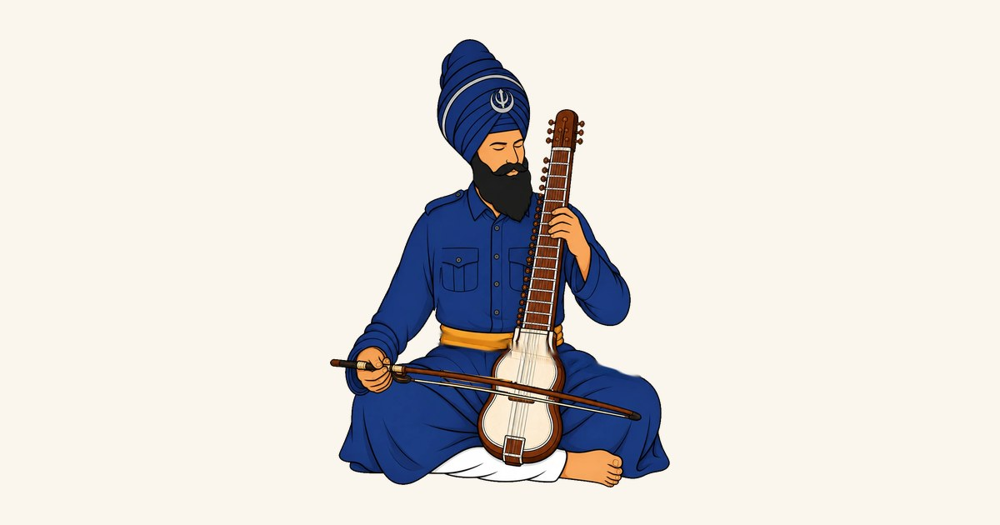

Classes
Find a class.
Everything the vidyala teaches, in one place. Every class is free, open to any age, and taught by volunteers. There is nothing to book and no audition — turn up.

01 — Open now
Kirtan
Vidyala
Kirtan on the tanti saaj — dilruba, taus, rabab, saranda — taught from the first note. A test of commitment more than of talent.
Gurudwara Shri Guru Dashmesh Sahib, Gipsy Lane
Nine classes a week · mornings and evenings

02 — Open now
Archery
Akhara
The dhanush the Khalsa carried, taught the way it was taught — stance, breath, and the loose. Bows are provided and no experience is needed.
Guru Tegh Bahadur Gurdwara, East Park Road
Sundays
03 — Running
Santhiya
Vidyala
Learning to read sudh Gurbani — the pronunciation, the pauses and the meaning. It is where everything else at the vidyala starts.
Guru Tegh Bahadur Gurdwara, East Park Road
Also online
04 — Running
Tabla & Jori
Vidyala
Taal, on the tabla and on the jori, taught alongside the saaj so the kirtan has something to stand on.
Guru Tegh Bahadur Gurdwara, East Park Road
Ask on WhatsApp for times05
Katha
Vidyala
Expounding Gurbani — what the shabad says and how to say it to a sangat.
Ask on WhatsApp06
Itihaas
Vidyala
The history of the Panth — the sakhian, the shaheeds, and the bungas these classes are named after.
Ask on WhatsAppNot sure which to start with, or want this week’s times? Message us — someone will tell you where to turn up.